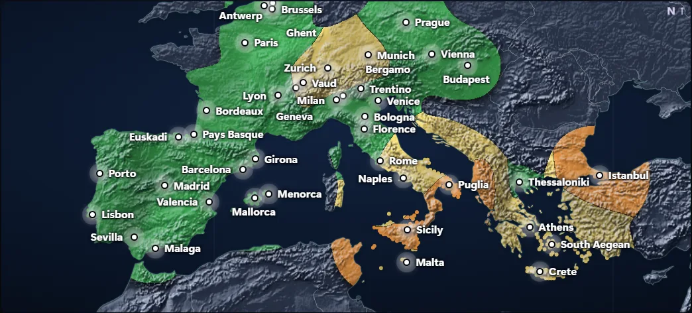

Data pipelines and analysis people decide from.

Never drop, never truncate. Upsert and keep the history. A silent corruption costs more than a crash, because a crash tells you.
A metric that did not exist in an era reads "not measured", never zero-filled to look observed. A chart that reads well but overstates what was measured is a defect, not a rough edge.
The deliverable is not the number. It is the thing someone opens, reads and decides from.
The notebooks are published with their saved outputs, charts and tables only; the code behind them stays private.